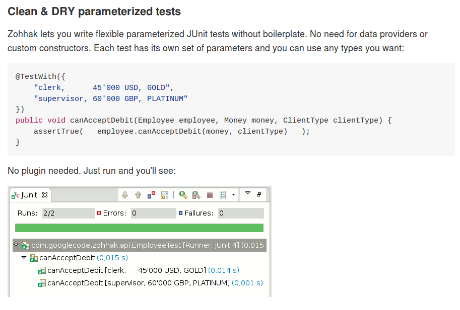
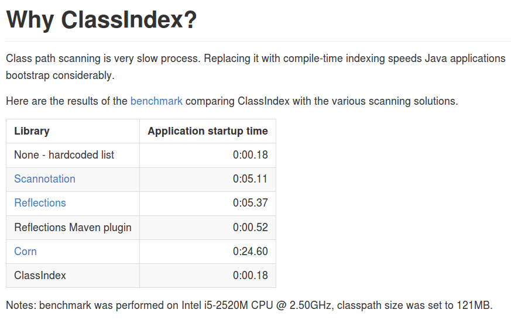

Advanced testing tools
Parametrised testing, system testing, NFR testing…
Tomasz Borek, @LAFK pl
About me
Today
We cover
Parametrised testing
|
DB tests
|
NFR and system tests
|
| Shallow - preso != workshop or training. |
Questions?
Or tweet me @LAFK_pl
Parametrised tests
TestNG
@DataProviderJUnit 4.12
JUnit Zohhak
JUnitParams
JUnit Theories
Property tests
TestNG
// Provides data to any test method declaring Data Provider named "nameAndAge"
@DataProvider(name = "nameAndAge")
public Object[][] nameIrrelevant() {
return new Object[][]{
{"Cedric", 36},
{"Anne", 37},
{"Tommy", 8},
{"Seoman", 18}, // who remembers Seoman Snowlock?
{"Miriamele", 19} // hint perhaps?
};
}
@Test(dataProvider = "nameAndAge")
public void verifyData1(String name, Integer age) {
System.out.println(name + " " + age);
}
@Test(dataProvider = "nameAndAge")
public void verifyData1Again(String name, Integer age) {
Assert.assertNotNull(name, "Name null for " + name + age);
Assert.assertNotNull(age, "Age null for " + name + age);
}
@Test(dataProvider = "nameAndAge")
public void verifyData1LastTime(String name, Integer age) {
SoftAssert soft = new SoftAssert();
soft.assertTrue(age > 18, name + " not of age in Europe!");
soft.assertTrue(age > 21, name + " not of age in US!");
soft.assertAll();
}
}JUnit 4.11
@RunWith(Parameterized.class)
public class AppParameterizedTest {
@Rule
public final JUnitSoftAssertions softly = new JUnitSoftAssertions();
private String name;
private Integer age;
public AppParameterizedTest(String n, Integer a) {
this.name = n;
this.age = a;
}
@Parameterized.Parameters(name = "{index}: name: {0} age: {1}")
public static Collection<Object[]> data() {
return Arrays.asList(new Object[][]{
{"Cedric", 36},
{"Anne", 37},
{"Tommy", 8},
{"Seoman", 18}, // who remembers Seoman Snowlock?
{"Miriamele", 19} // hint perhaps?
});
}
@org.junit.Test
public void verifyData1() {
System.out.println(name + " " + age);
}
@org.junit.Test
public void verifyData1Again() {
// reversed message - condition order
org.junit.Assert.assertNotNull("Name null for " + name + age, name);
org.junit.Assert.assertNotNull("Age null for " + name + age, age);
}
/**
* @see <A HREF="http://joel-costigliola.github.io/assertj/assertj-core-features-highlight.html#soft-assertions">AssertJ SoftAssertions 4 JUnit</A>
*/
@org.junit.Test
public void verifyData1LastTime() {
softly.assertThat(age).as(name + " not of age in Europe! (JU+AJ)").isGreaterThan(18);
softly.assertThat(age).isGreaterThan(21).as(name + " not of age in US! (JU+AJ)");
}
}JUnit - brief history
4.7 brought
@Rule ErrorCollector4.11 brought description for
@Parameterized4.12 brought other types for
@Parameterized(Object[]andIterable)5.0 deals away with rules and runners…
Zohhak
Simplifies parametrised testing for JUnit

Zohhak test
import com.googlecode.zohhak.api.TestWith;
import com.googlecode.zohhak.api.runners.ZohhakRunner;
import org.junit.runner.RunWith;
/**
* @author LAFK_pl, Tomasz.Borek@gmail.com
*/
@RunWith(ZohhakRunner.class)
public class AppZohhakTest {
@TestWith({
"36, Cedric",
"37, Anne",
"8, Tommy",
"18, Seoman",
"19, Miriamele" })
public void personIsAdult(int age, String name) {
org.assertj.core.api.Assertions.assertThat(age).isGreaterThanOrEqualTo(18).as("adult in EU");
org.assertj.core.api.Assertions.assertThat(age).isGreaterThanOrEqualTo(21).as("adult in US");
}
}JUnitParams
@RunWith(JUnitParamsRunner.class)
public class AppJUnitParamsTest {
@Test
@junitparams.Parameters({
"36, Cedric",
"37, Anne",
"8, Tommy",
"18, Seoman",
"19, Miriamele" })
public void personIsAdult(int age, String name) {
org.assertj.core.api.Assertions.assertThat(age).isGreaterThanOrEqualTo(18).as("adult in EU");
org.assertj.core.api.Assertions.assertThat(age).isGreaterThanOrEqualTo(21).as("adult in US");
}
}JUnit Theories
Aka Poppler project.
@RunWith(Theories.class)
public class AppTheory {
@DataPoints
public static Person[] personProvider() {
return new Person[] {
new Person("Cedric", 36),
new Person("Anne", 37),
new Person("Tommy", 8),
new Person("Seoman", 18), // who remembers Seoman Snowlock?
new Person("Miriamele", 19), // hint perhaps?
new Person(null, 22)
};
}
/**
* In THEORY, name is 'of age' after 'name' reaches 18. Assuming 'name' shan't be null,
*
* THEORY however is wrong if one case disproving it is found, so... SoftAssertions again!
*/
@Theory(nullsAccepted = true)
public void ofAge(Person p) {
Assume.assumeNotNull(p.name);
Assume.assumeNotNull(p.age);
org.assertj.core.api.Assertions.assertThat(p.age).as(p.name + "? Not in Europe").isGreaterThan(18);
org.assertj.core.api.Assertions.assertThat(p.age).isGreaterThan(21).as(p.name + "? Not in US");
}
}Summary?
Name | Soft Assertions | Params | Reporting |
TestNG | + |
| + |
JUnit |
| since (4.11) |
JUnit Theory
Zohhak
JUnitParams
JUnit 5
From JUnit Lambda crowdfunding
Can run JUnit 4 tests or new ones (2 engines)
Straighten up concepts, shaked out
@Ruleor@RunWithNo IDE support now, only Console runner, Maven or Gradle
JUnit 5 from Maven
$ ➜ git clone https://github.com/junit-team/junit5-samples.git
$ ➜ cd junit5-maven-consumer
$ ➜ mvn test
-------------------------------------------------------
T E S T S
-------------------------------------------------------
Running com.example.project.SecondTest
Tests run: 1, Failures: 0, Errors: 0, Skipped: 1, Time elapsed: 0.055 sec - in com.example.project.SecondTest
Running com.example.project.FirstTest
Tests run: 1, Failures: 0, Errors: 0, Skipped: 0, Time elapsed: 0.01 sec - in com.example.project.FirstTest
Running com.example.project.JUnit4Test
Tests run: 1, Failures: 0, Errors: 0, Skipped: 0, Time elapsed: 0.021 sec - in com.example.project.JUnit4Test
Results :
Tests run: 3, Failures: 0, Errors: 0, Skipped: 1
$ ➜ junit5-maven-consumer git:(master) tree src
src
└── test
└── java
└── com
└── example
└── project
├── FirstTest.java
├── JUnit4Test.java
└── SecondTest.java
$ ➜ junit5-maven-consumer git:(master) vim pom.xmlFirstTest.java
import static org.junit.gen5.api.Assertions.assertEquals;
import org.junit.gen5.api.DisplayName;
import org.junit.gen5.api.Test;
import org.junit.gen5.api.TestInfo;
class FirstTest {
@Test
@DisplayName("My 1st JUnit 5 test! 😎")
void myFirstTest(TestInfo testInfo) {
assertEquals(2, 1 + 1, "1 + 1 should equal 2");
assertEquals("My 1st JUnit 5 test! 😎", testInfo.getDisplayName(), () -> "TestInfo is injected correctly");
}
}SecondTest.java
import static org.junit.gen5.api.Assertions.assertEquals;
import org.junit.gen5.api.Disabled;
import org.junit.gen5.api.Test;
class SecondTest {
@Test
@Disabled
void mySecondTest() {
assertEquals(2, 1, "2 is not equal to 1");
}
}JUnit4Test.java
import static org.junit.Assert.assertEquals;
import org.junit.Test;
public class JUnit4Test {
@Test
public void test() {
assertEquals(3, 1 + 2);
}
}Third - our - test
import static org.junit.gen5.api.Assertions.assertEquals;
import static org.junit.gen5.api.Assertions.assertAll;
import org.junit.gen5.api.DisplayName;
import org.junit.gen5.api.Test;
import org.junit.gen5.api.TestInfo;
class ThirdTest {
@Test
@DisplayName("Experimental parametrized test!")
void myFirstParameterizedTest(TestInfo testInfo) {
assertAll("display name",
() -> assertEquals(2, 1 + 1, "1 + 1 should equal 2"),
() -> assertEquals("Experimental parametrized test", testInfo.getDisplayName(), () -> "TestInfo is injected correctly")
);
}
}Running it?
via mvn test:
Running com.example.project.ThirdTest
Tests run: 1, Failures: 1, Errors: 0, Skipped: 0, Time elapsed: 0.001 sec <<< FAILURE! - in com.example.project.ThirdTest
Experimental parametrized test! Time elapsed: 0.001 sec <<< FAILURE!
org.opentest4j.MultipleFailuresError:
display name (1 failure)
TestInfo is injected correctly ==> expected: <Experimental parametrized test> but was: <Experimental parametrized test!>
at com.example.project.ThirdTest.myFirstParameterizedTest(ThirdTest.java:16)
Running com.example.project.JUnit4Test
Tests run: 1, Failures: 0, Errors: 0, Skipped: 0, Time elapsed: 0.026 sec - in com.example.project.JUnit4Test
Results :
Failed tests:
ThirdTest.myFirstParameterizedTest:16 display name (1 failure)
TestInfo is injected correctly ==> expected: <Experimental parametrized test> but was: <Experimental parametrized test!>
Tests run: 4, Failures: 1, Errors: 0, Skipped: 1First NF requirements
- EXTENSIBILITY
ability to extend and modify software quickly and easily
- CONFIGURABILITY
ability to tune software to your needs, switch configs on the fly, dynamically update it without restart…
- MODULARITY
organising software into modules, for reuse, understanding and cohesion
How can we make sure these are met?
NFR tests here are…
System tests.
Examples
|
Tools?
Classpath scanning
|
ClassIndex

Usability
- USABILITY
how well we can use the software, how much "usable" is it. UX, UI, intuitiveness and composition of the interface…
And here?
Usability tests are end to end tests
Scenarios (how hard it would be to add "undo" feature to a given screen?
End-to-end tests
Tools
Gauge, by ThoughtWorks
https://github.com/getgauge/gauge-example-java
http://getgauge.io/get-started/index.html
Performant software?
- HIGH AVAILABILITY
software - despite whatever - remains able to work
- RELIABILITY
software performs the service without problems
Tests for performant software?
- LOAD tests
can we shoulder load we are anticipating, up till our ceiling?
- SOAK tests
how much abuse can we take once we PASS the ceiling?
- ENDURANCE tests
for how long can we run within our anticipated range?
Tools?
stress
Gatling
Stress
$ sudo apt-get install stress
$ man stress
$ htop
$ stress --cpu 4 --io 3 --hdd 3 --vm 2 --vm-bytes 128MGatling
Extra
Alias "everything else" :-)
WireMock
WS test double
Awaitability
Asynchronous tests?
Bibliography / Links
for further reading
WireMock by Tom Akenhurst
http://wiremock.org/java-usage.html - web-service test double
Fault injection
https://developer.jboss.org/wiki/FaultInjectionTestingWithByteman
https://dzone.com/articles/fault-injection-testing-first
https://theholyjava.wordpress.com/2012/02/25/cool-tools-fault-injection-into-unit-tests-with-jboss-byteman-easier-testing-of-error-handling/
wrk - w C, piszesz skrypty w Lua
Tools
JUnit
Zohhak
JUnitParams
DBUnit
DataBene Benerator
JFairy
LiquiBase
Spring Data
stress
Gatling
JUnit QuickCheck
BUnit